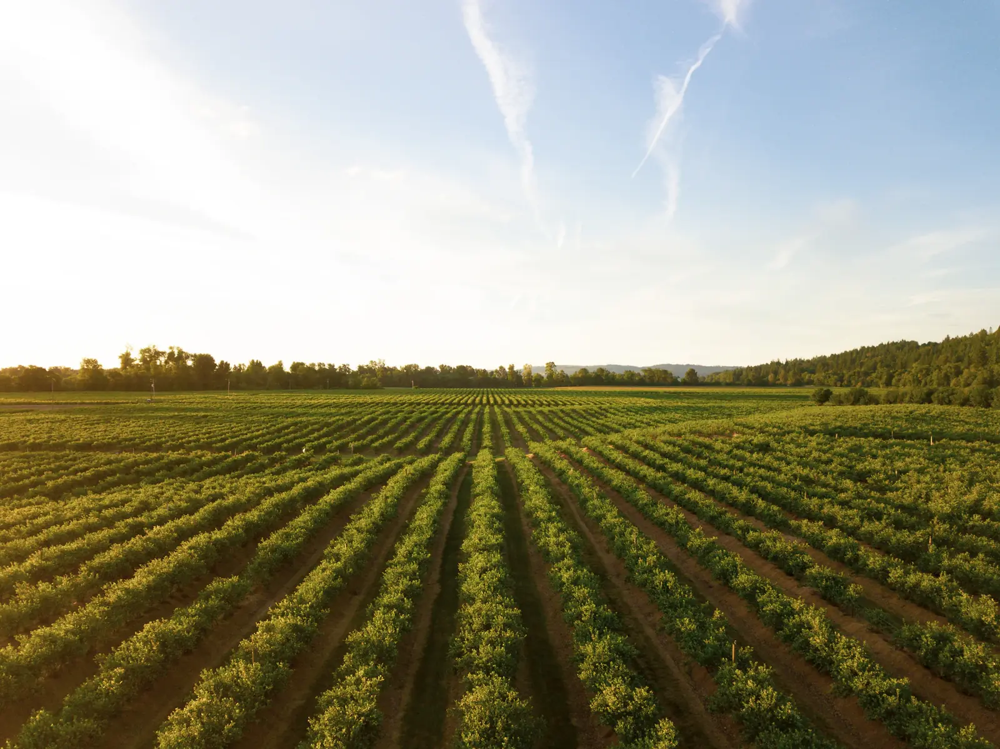

Vous parlez, il comprend votre exploitation : vos parcelles, votre stock, votre historique. Pas l'agriculture en général, la vôtre.
Graine est l'assistant vocal d'Agri-IA : un copilote pensé pour la gestion d'exploitation agricole, mains libres, au champ comme au bureau. Il ne remplace pas votre jugement, il vous évite la ressaisie. Ce que vous lui dites une fois alimente votre registre, votre stock et le suivi économique de votre exploitation.
Graine identifie la parcelle, vérifie la météo et le produit, prépare l'intervention et met le stock à jour, après votre validation.
Graine croise vos charges, vos ventes et vos surfaces pour répondre en quelques secondes, parcelle par parcelle.
Une photo suffit : Graine lit le fournisseur, le montant et l'échéance, puis propose l'enregistrement.
Déposez ou photographiez un document : Graine identifie de quoi il s'agit, en extrait les informations clés et vous dit ce qu'il faut en retenir.
Graine prépare un résumé clair. Rien n'est écrit dans vos registres tant que vous n'avez pas cliqué sur "Valider".
Une erreur, un changement d'avis : chaque intervention ou tâche enregistrée peut être corrigée ou annulée après coup.
Si une information manque (une dose, un rendement), Graine vous la demande : il ne devine jamais à votre place.
Depuis le champ, la cabine de votre tracteur ou votre bureau, dès que vous avez votre téléphone à portée de main.
Oui. Graine apprend les noms de vos parcelles, vos cultures et vos habitudes de travail au fil de son utilisation.
Il vous demande de préciser plutôt que de deviner. Aucune information incertaine n'est enregistrée sans confirmation.
Oui. Chaque utilisateur peut lui parler depuis son propre accès, avec une vue adaptée à son rôle sur l'exploitation.

Démarrage en 5 minutes, sans carte bancaire.